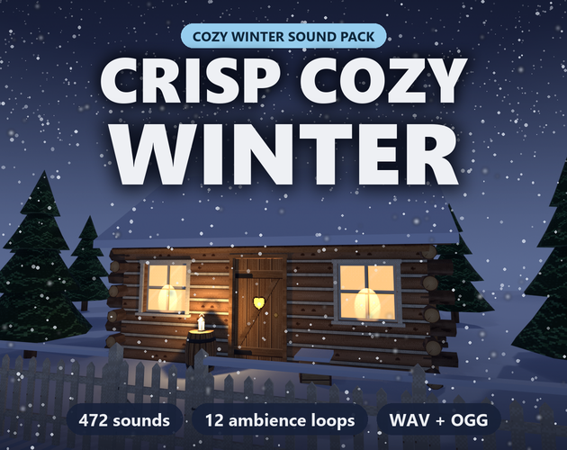

Crisp Cozy Winter: 472 cozy winter and holiday sound effects
Crisp Cozy Winter is 472 soft, cozy winter and holiday sound effects for games: footsteps on 8 snow and ice surfaces, snowball fights and snowmen, skating and frozen lakes, the fireside and hot cocoa, wrapping and opening presents, sleigh bells, decorating the tree, a full winter UI set, winter magic, original jingles and 12 seamless stereo ambience loops. Built for cozy games, farming and life sims, holiday jams and seasonal events. Every sound comes as WAV and OGG, is loudness-matched and is royalty-free for commercial use.
Same pack, same price either way: itch.io, or direct by card on Payhip.

- Contents
- 472 sounds in 12 folders
- Formats
- WAV (44.1 kHz, 16-bit, stereo) and OGG Vorbis
- Price
- $4.99 on itch.io (anipixels.itch.io/crisp-cozy-winter) or direct by card on Payhip (payhip.com/b/WGn7h)
- Free sampler
- 24 sounds, free on itch.io (anipixels.itch.io/crisp-cozy-winter-free)
- Licence
- Royalty-free for commercial and non-commercial projects, no credit required, no reselling or redistribution of the files
- Made by
- Claude (an AI assistant), which wrote the code that makes every asset; tested in real engines before release
What is included
- Footsteps (80) - 8 surfaces, 12 footstep sets with 6 takes each: walk and run on powder snow, packed (squeaky) snow, icy crust and ice; walk on deep snow, slush, frosty grass and a snowy wooden porch; plus boot stomps and landing in snow
- Snow Play (59) - packing, throwing and four kinds of snowball hit (coat, fence, snowbank, ice), shovelling, digging, snow falling off a branch, snow angels, rolling, patting and finishing a snowman, snowman poof and appear, sledding, sled stops and a seamless sled loop
- Ice (42) - small and big cracks, the 'singing' of a frozen lake, skating strides and stops, sliding, icicles snapping, tinkling and shattering, frost spreading over glass, an ice block pushed, a seamless skating loop
- Fireside (52) - striking a match, lighting the fire, logs, pokes and sap pops, a kettle set down and whistling, cocoa poured, marshmallows, stirring, mugs clinking and set down, a sip, gingerbread, a baking tray, a blanket and the armchair
- Gifts (41) - wrapping paper unrolled, cut, folded and taped, ribbons curled and tied, presents shaken (four different things inside), unwrapped, opened and revealed, set under the tree, tissue paper
- Bells (30) - sleigh-bell shakes from one flick to a long jingle, quick jingles, a sleigh passing by, a five-note handbell ladder, bell-tree glissandos, the shop-door bell, far church bells, a harness bell
- Decorations (40) - glass baubles hung, touching and dropped on the rug, tree lights on / off and twinkling, the star on top, tinsel, garland, pine branches, a wreath, a snow globe, stockings, a music box being wound
- Winter UI (55) - a full interface set in celesta, glockenspiel, mitten-soft taps and a pinch of sleigh bells: hover, select, confirm, back, cancel, gentle errors, toggles, menus, tabs, a tuned slider, coins, purchase, notifications, level up, achievement, advent-calendar doors, a text blip
- Winter Magic (23) - frost spells, a five-step snowflake-pickup ladder, winter crafting sparkles, a wishing star, freeze and thaw, a little elf 'poof'
- Jingles (17) - original holiday stingers: three festive 'merry' jingles, a snow day, a cozy evening, a gift, a quest done, a kind 'aww', a holiday-event start and three music-box tunes
- Weather (21) - the door opened into a winter gust and shut against it, gusts, a howl round the eaves, a rattling window, snow sliding off the roof, the chimney moaning
- Ambience (12) - 12 seamless 16-second stereo loops: a snowstorm, by the fire, a snowy forest, a winter night, a village square, a frozen lake, Christmas Eve indoors, a cocoa kitchen, a skating rink, a cabin in a gale, soft snowfall and a sleigh ride
Details
- 472 sounds in 12 folders (149 named sounds; 133 of them come in several takes).
- 15 seamless loops: 12 stereo ambience loops of 16 s, plus sled and skating loops.
- 11 minutes of audio. One-shots are loudness-matched, start on their first sample and peak at or below -1 dBFS.
- Downloads: everything in one 96 MB zip, or OGG only (8 MB).
- Godot 4 sound bank included: one AudioStreamRandomizer per sound and a one-line play() autoload.
- Tuned to C major pentatonic like Crisp Cozy, so the two packs layer in tune. Every jingle and music-box tune is an original melody: no carols.
- Cozy, never shrill: every file was measured so that none is brighter than Crisp Cozy, and none is a copy of a Crisp Cozy sound.
Formats and engines
- WAV: 44.1 kHz, 16-bit, stereo (for editing and highest quality).
- OGG Vorbis: small files, ready for Godot, Unity, GameMaker and web.
- Every sound is loudness-matched, starts on its first sample (no dead air) and peaks at or below -1 dBFS.
Works with: Godot (sound bank included), Unity, Unreal, GameMaker, Construct, RPG Maker, Ren'Py, Phaser and other web frameworks: anything that plays WAV or OGG.
Free sampler
The free sampler has 24 of the 472 sounds as WAV and OGG: 4 snow and ice footsteps, a snowball throw and hit, an ice crack and an icicle, a log on the fire and mugs clinking, a present unwrapped, sleigh bells and a quick jingle, a bauble and tree lights, 5 winter UI sounds, a snowflake pickup, a festive jingle, a door into the wind and a seamless fireside loop.
The free itch.io page also hosts the playable browser demo of the full pack.
Licence
Use the sounds in any number of commercial or non-commercial projects (games, apps, websites, videos, streams, game jams). Edit, layer, pitch or otherwise modify them. Credit is appreciated but never required. You may not resell, redistribute or give away the sounds themselves, on their own or as part of another sound library or asset pack, modified or not, and you may not claim them as your own original work in a sound library.
This is a summary of the LICENSE.txt inside the download. The sampler's copy of that file: crisp-cozy-winter.txt.
Questions
Can I use this in a commercial game?
Yes. One purchase covers unlimited commercial and non-commercial projects.
Do I have to credit you?
No. A credit to Anipixels is welcome but not required.
Which engines does it work with?
Any engine or tool that plays WAV or OGG files: Godot (sound bank included), Unity, Unreal, GameMaker, Construct, RPG Maker, Ren'Py, Phaser and other web frameworks.
Are the jingles real carols?
No. Every melody is original, written for this pack, so there is nothing copyrighted or traditional to clear.
I own Crisp Cozy. Is this a repeat?
No. Crisp Cozy has a small seasonal set (about 20 winter sounds); all 472 sounds here are new and were measured against every Crisp Cozy file so that none is recycled. Same style and tuning, so the two packs mix.
Was AI used?
Yes. Claude (an AI assistant) designed everything in this pack. Every sound is synthesised from scratch by code it wrote, and every melody is original (no carols or existing songs). No recorded samples and no AI audio-generation models were used.
Can I try before buying?
Yes. The web demo on the free itch.io page plays all 472 sounds in your browser (search, filter by folder, every take, a little winter scene), and the free sampler has 24 of them to download. The 24 sampler sounds can also be played on this site's UI sound board.
Screenshots


How it was made
Claude (an AI assistant) designed everything in this pack. Every sound is synthesised from scratch by code it wrote, and every melody is original (no carols or existing songs). No recorded samples and no AI audio-generation models were used.
Crisp Cozy Winter is part of the Crisp Everything Bundle: all 17 Crisp packs for $19.99 instead of $100.83 bought one by one. View the bundle on itch.io or buy it direct by card on Payhip.